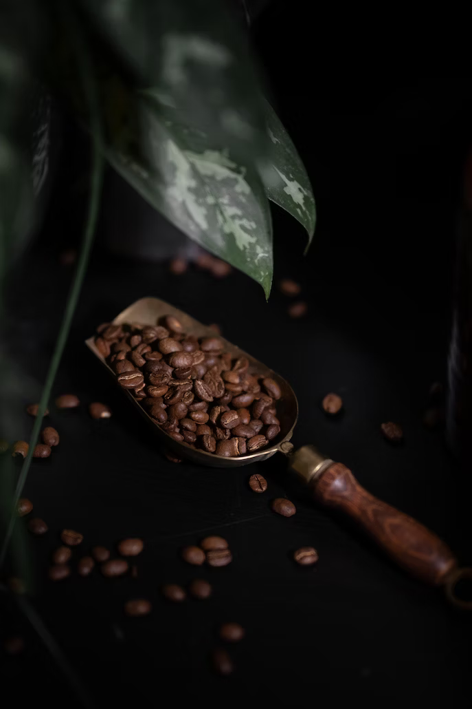
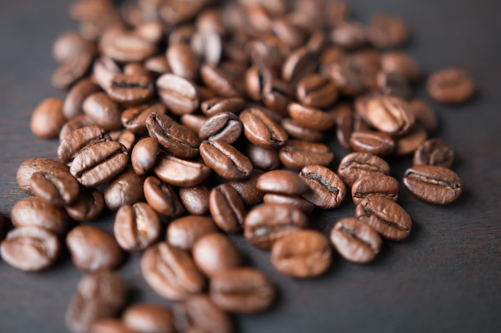
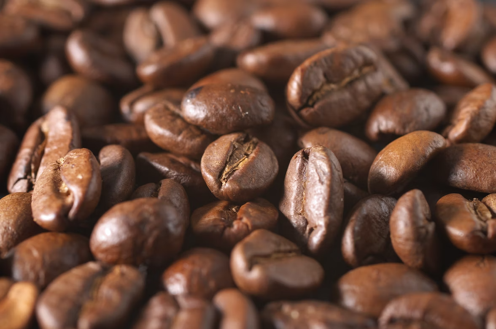
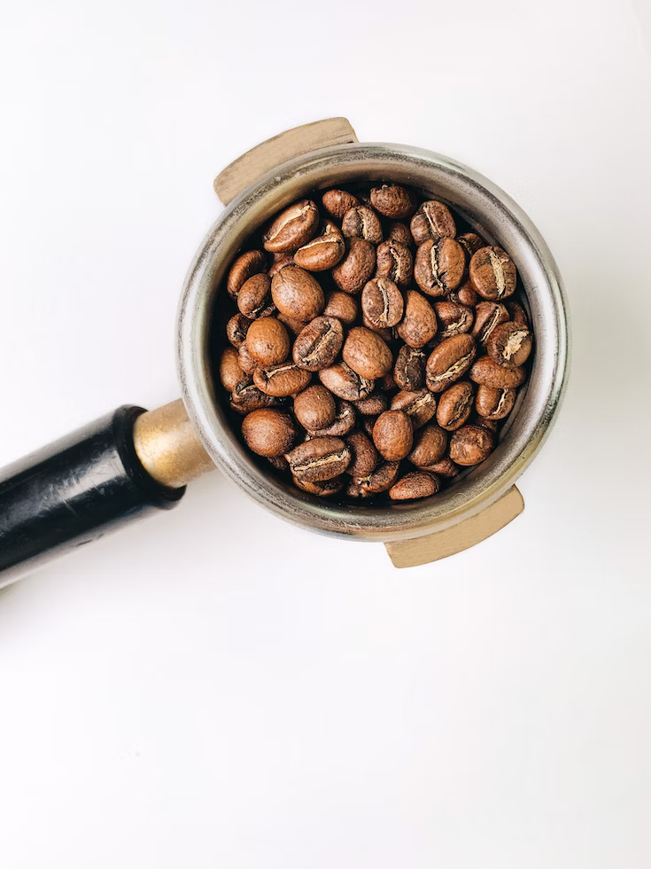

Notre catalogue
Espresso

- Description : Café fort et concentré préparé en faisant passer de l'eau chaude à travers du café finement moulu.
- Référence : 100955890
- Origine : Italie
- Prix au kilo : 20.99 €
- Caractéristique principale : Corsé
- Disponible : Oui
Columbian

- Description : Café moyennement corsé avec une acidité vive et une saveur riche.
- Référence : 100955894
- Origine : Colombie
- Prix au kilo : 18.75 €
- Caractéristique principale : Acide
- Disponible : Oui
Ethiopian Yirgacheffe

- Description : Réputé pour son arôme floral, son acidité vive et ses notes de saveur citronnée.
- Référence : 105589090
- Origine : Éthiopie
- Prix au kilo : 22.50 €
- Caractéristique principale : Fruité
- Disponible : Oui
Brazilian Santos

- Description : Café doux et lisse avec un profil de saveur de noisette.
- Référence : 134009550
- Origine : Brésil
- Prix au kilo : 17.80 €
- Caractéristique principale : Doux
- Disponible : Oui
Guatemalan Antigua

- Description : Café corsé avec des nuances chocolatées et une pointe d'épice.
- Référence : 256505890
- Origine : Guatemala
- Prix au kilo : 21.25 €
- Caractéristique principale : Corsé
- Disponible : Oui
Kenyan AA

- Description : Café complexe connu pour son acidité rappelant le vin et ses saveurs fruitées.
- Référence : 295432730
- Origine : Kenya
- Prix au kilo : 23.70 €
- Caractéristique principale : Acide
- Disponible : Oui
Sumatra Mandheling
- Description : Café profond et terreux avec un corps lourd et une faible acidité.
- Référence : 302932754
- Origine : Indonésie
- Prix au kilo : 19.95 €
- Caractéristique principale : Corsé
- Disponible : Oui
Costa Rican Tarrazu
- Description : Café vif et net avec une finition propre et une acidité vive.
- Référence : 327302954
- Origine : Costa Rica
- Prix au kilo : 24.50 €
- Caractéristique principale : Acide
- Disponible : Oui
Vietnamese Robusta

- Description : Café audacieux et fort avec une saveur robuste distinctive.
- Référence : 549549090
- Origine : Vietnam
- Prix au kilo : 16.75 €
- Caractéristique principale : Épicé
- Disponible : Oui
Tanzanian Peaberry
- Description : Acidité vive avec un profil de saveur rappelant le vin et un corps moyen.
- Référence : 582954954
- Origine : Tanzanie
- Prix au kilo : 26.80 €
- Caractéristique principale : Fruité/li>
- Disponible : Oui
Jamaican Blue Mountain

- Description : Reconnu pour sa saveur douce, son acidité vive et son absence d'amertume.
- Référence : 589100954
- Origine : Jamaïque
- Prix au kilo : 39.25 €
- Caractéristique principale : Doux
- Disponible : Oui
Rwandan Bourbon

- Description : Café avec des notes florales prononcées, une acidité vive et un corps moyen.
- Référence : 650753915
- Origine : Rwanda
- Prix au kilo : 21.90 €
- Caractéristique principale : Fruité
- Disponible : Oui
Panamanian Geisha
- Description : Café rare aux arômes floraux complexes, une acidité brillante et un profil de saveur distinctif.
- Référence : 795501340
- Origine : Panama
- Prix au kilo : 42.00 €
- Caractéristique principale : Fruité
- Disponible : Oui
Peruvian Arabica
- Description : Café équilibré avec des notes de chocolat, une acidité modérée et un corps velouté.
- Référence : 954589100
- Origine : Pérou
- Prix au kilo : 19.40 €
- Caractéristique principale : Chocolaté
- Disponible : Non
Hawaiian Kona

- Description : Café rare au goût riche, une acidité douce et des nuances subtiles.
- Référence : 958090105
- Origine : Hawaï
- Prix au kilo : 55.75 €
- Caractéristique principale : Doux
- Disponible : Non
Nicaraguan Maragogipe

- Description : Café avec des notes de fruits, une acidité vive et un corps plein.
- Référence : 691550753
- Origine : Nicaragua
- Prix au kilo : 28.60 €
- Caractéristique principale : Fruité
- Disponible : Non